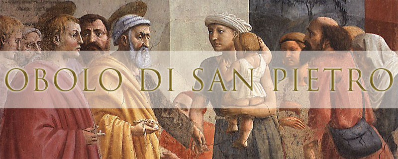

|  Si Chiama Obolo di San Pietro l’aiuto economico che i fedeli offrono al Santo Padre, come segno di adesione alla sollecitudine del Successore di Pietro per le molteplici necessità della Chiesa universale e per le opere di carità in favore dei più bisognosi. ... per saperne di più, visita il sito: www.obolodisanpietro.va
In qualunque momento puoi inviare il tuo obolo a:
Sua Santità Papa Francesco - 00120 Città del Vaticano
O se preferisci, attraverso:
Conto Corrente
Bancario Multivaluta (EUR, USD, CHF, GBP)
FinecoBank S.p.A.
Beneficiario: Obolo di San Pietro
IBAN: IT 52 S 03015 03200 000003501166
BIC/SWIFT:
- FEBIITM1 o FEBIITM1XXX (se fosse necessario indicare 11
caratteri) per ricevere bonifici in EUR da banche aderenti
al circuito Sepa
- FEBIITM2 o FEBIITM2XXX (se fosse necessario indicare 11
caratteri) per ricevere bonifici in valuta estera o in EUR
da Paesi non Sepa
(Si prega di indicare il proprio nome, cognome ed indirizzo completo)
oppure, se preferisci:
Conto Corrente Postale (EUR)
"Obolo di San Pietro" n. 75070003
00120 Città del Vaticano
IT 27 S 0760 10320 0000075070003 - SWIFT: BPPIITRRXXX
|
Si possono anche effettuare donazioni tramite assegno intestato all'Obolo di San Pietro da inviare all'indirizzo:
Ufficio Obolo di San Pietro 00120 Città del Vaticano
|